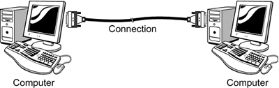
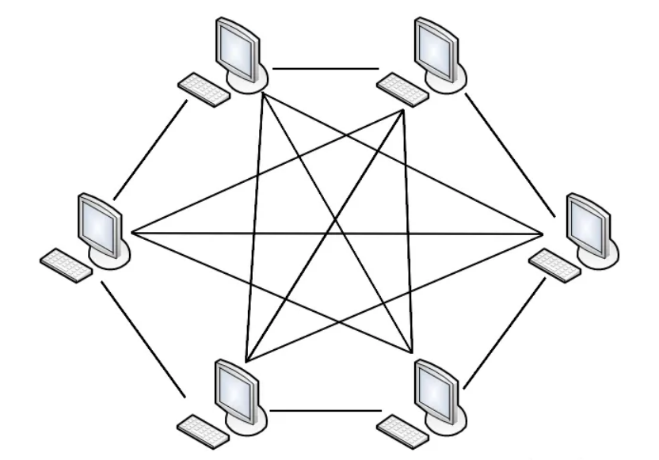
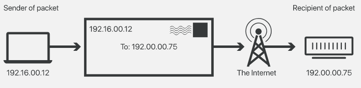
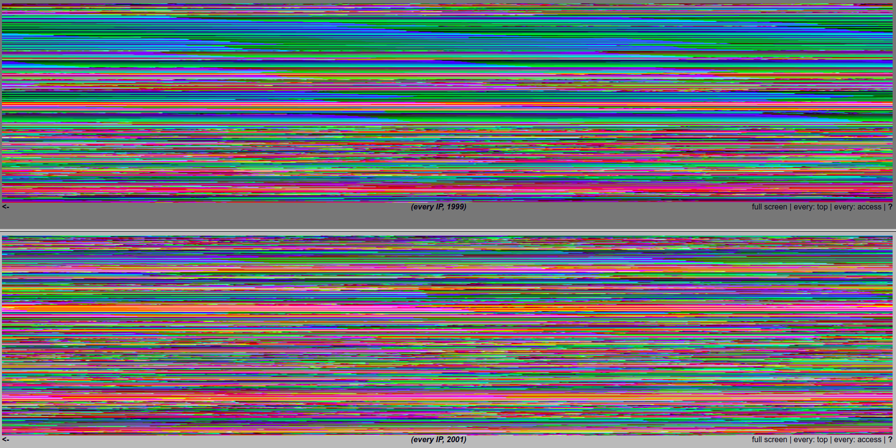
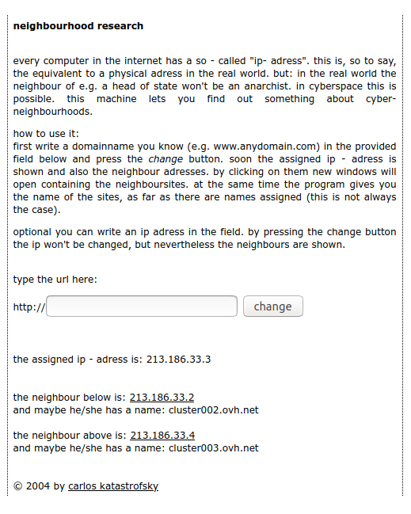
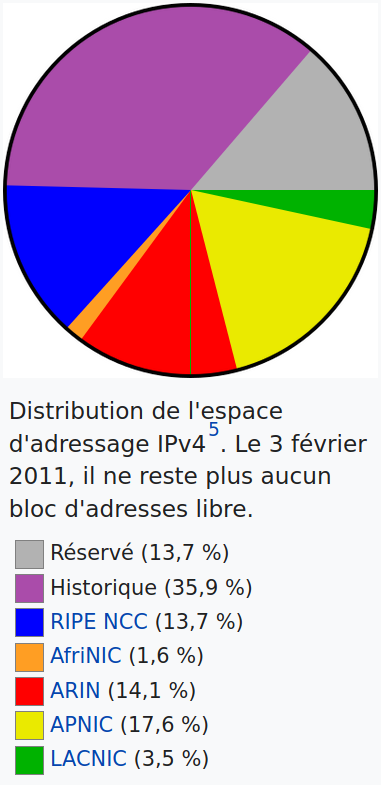
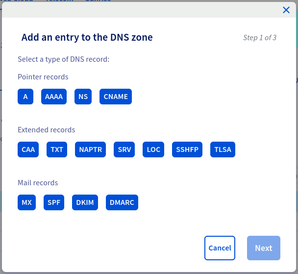
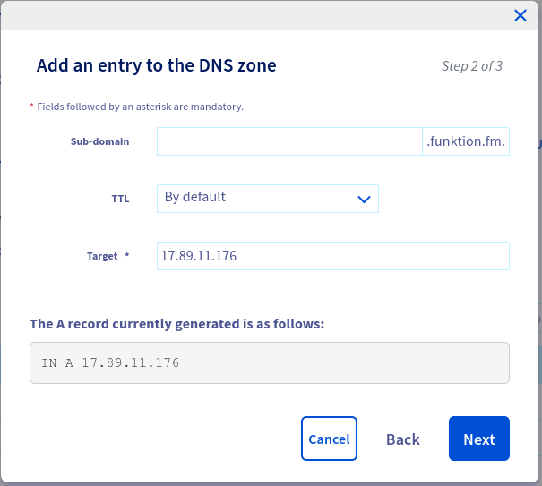

1960 - 1970 : Premières conceptualisation de l’Internet comme un réseau résistant aux attaques nucléaires.

Conception et mise en place d’ARPANET
“L’objectif de ce programme est double : (1) developper des techniques et gagner de l’expérience sur l’interconnection des ordinateurs tout en permettant un large pannel d’interactions possible, et (2) améliorer et intensifier l’efficacité de la recherche en informatique à travers le partage de connaissances.” *
1969 :

1970 - … : Apparition de nombreux réseaux de recherche : MFENet (chercheurs en Énergie de fusion magnétique), HEPNet (physique des hautes énergies), SPAN (NASA), CSNET (sciences informatiques), …
1972 : Invention de l’email
1990 : le World Wide Web - www Le premier “navigateur Internet” implémenté par Tim Berners-Lee permettait aussi de modifier les pages (comme un wiki) :

1995 : Le 24 octobre 1995, le FNC (Federal Networking Council ) adopta unanimement une résolution définissant le terme Internet.
“Le territoire virtual du cyberspace ne peut être superposé à un territoire géographique. Ses couches physiques d’ordinateurs et de réseaux ne peuvent éviter complètement une autorité territoriale, mais lorsque ces appareils de la couche physique sont interconnectés et interopérant, ils participent continuellement à un espace virtuel mondialisé qui n’est sous le contrôle complet d’aucun état. C’est un commun mondial. Hague Keynote: Sovereignty in Cyberspace, Milton Mueller, 2020”
RFC - Request For Comments
“L’importance de la méthode RFC et du NWG va bien plus loin que le rôle crucial qu’ils ont joué dans l’établissement des standards de l’Internet d’aujourd’hui. Ils ont tous deux aidé à créer et renforcer une nouvelle culture révolutionaire qui au nom de la connaissance et de la résolution de problèmes tend à considérer les hiérarchies de pouvoir comme des nuisances, et à considérer le travail en réseau comme le meilleur chemin vers la solution à tout problème. Dans cet environement ce n’est pas la vision ou les idées d’un individu qui comptent, mais le bien-être de l’environement lui-même : c’est à dire, le réseau.” *
“Les buts de ce papier sont de présenter le concept et, je l’éspère, d’encourager le développement de symbioses entre humains-ordinateurs en analysant certains des problèmes dans l’intéraction entre l’humain et la machine, en attirant l’attention sur des principes applicables d’ingénierie humain-machine, et en listant quelques questions qui nécessitent plus de recherche. L’espoir est que, dans quelques années, les cerveaux humains et les machines pourront être profondément couplés, and que le partenariat en résultant pensera comme aucun cerveau humain n’a jamais pensé, et traitera de la donnée d’une manière inaccessible aux ordinateurs que nous connaissons pour l’instant.” Man-Computer Symbiosis, J. C. R. Licklider, 1960
“Le cyberspace. Une hallucination consensuelle vécue quotidiennement en toute légalité par de dizaines de millions d’opérateurs, dans tous les pays, par des gosses auxquels on enseigne les concepts mathématiques… Une représentation graphique de données extraites des mémoires de tous les ordinateurs du système humain. Une complexité impensable. Des traits de lumière disposés dans le non-espace de l’esprit, des amas et des constellations de données. Comme les lumières des villes dans le lointain…” Neuromancien, William Gibson, 1984

Sur Timothy Leary : “Les gens qui ont grandi en utilisant des appareils éléctroniques pour penser et communiquer constitueraient une nouvelle éspèce, que Leary appelle la”New Breed“, our les”cyberpunks“. Selon Leary, la”New Breed" est en train de créer une nouvelle société cybernétique et post-politique qui est basé sur les libertés individuelles, et fonctionne sur les principes cybernétiques d’auto-organisation et de feedback. Ce seraient une société qui n’opère pas sur les bases de l’obéissance et de la conformisation à un dogme - une société basée sur la reflexion individuelle, le savoir scientifique, l’échange rapide de faits à travers des réseaux de feedback, …" Think for Yourself; Question Authority, Arno Ruthofer, 1997

“Cette nouvelle foi a emergé d’une fusion bizarre entre le bohémianisme culturel de San Francisco avec les industries de haute technologie de la Silicon Valley… l’Idéologie Californienne combine, dans la promiscuité, l’esprit libre des hippies avec le zèle entrepreunerial des yuppies.” The Californian Ideology, Richard Barbrook and Andy Cameron, 1995


IP est l’acronyme pour Internet Protocol, et le protocole central sur lequel l’Internet est construit.
La conception du protocole IP prend en compte les facteurs suivants :
Découpe de données à envoyer en packets de taille maximale 65535 octets.

Commutation de paquets (“packet switching”). Packets autonomes, sans garantie de livraison, sans garantie d’ordre d’arrivée.

Système d’addressage (envoyeur, destinataire)

Structure d’une addresse IP

1:1 (2), Lisa Jevbratt, 1999-2002 lien

every computer in the internet has a so - called “ip- adress”. this is, so to say, the equivalent to a physical adress in the real world. but: in the real world the neighbour of e.g. a head of state won’t be an anarchist. in cyberspace this is possible. this machine lets you find out something about cyber- neighbourhoods. lien






X192.168.X.1